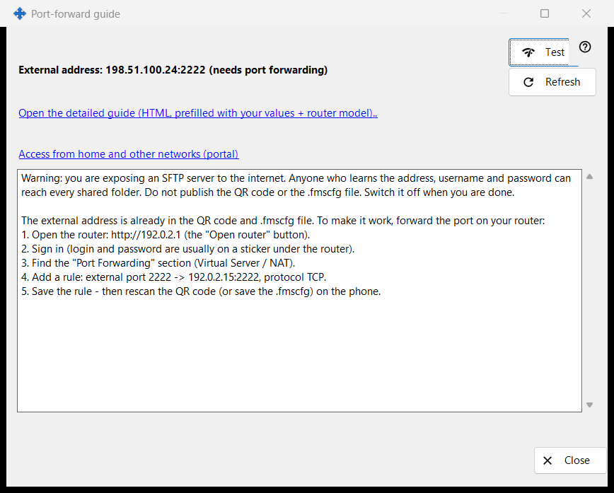
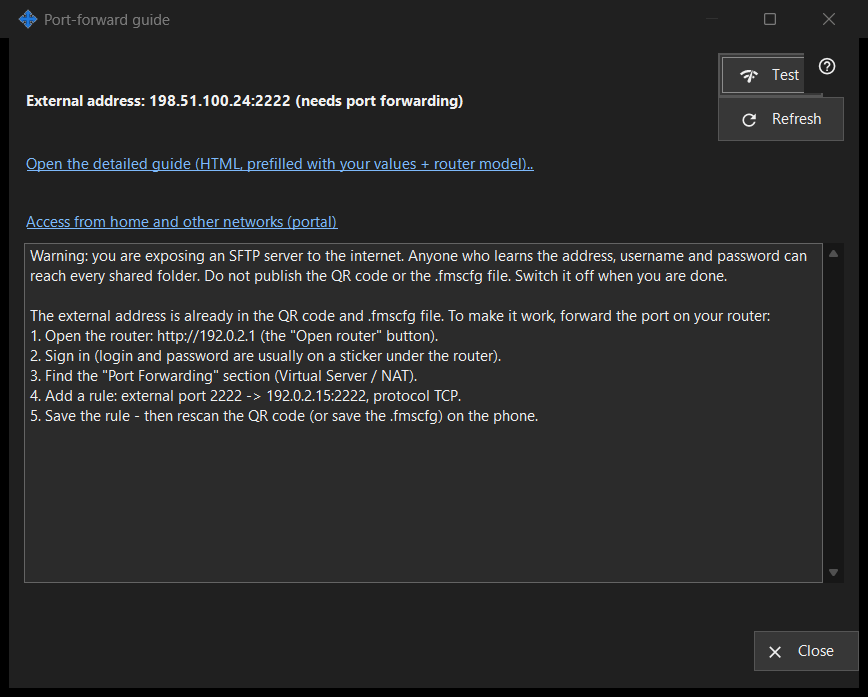

Port-forward guide
What this is for
Helps to make the share reachable from outside your home network. It shows the external address and whether the port was opened automatically or needs forwarding on the router, and offers a test and a detailed guide. It opens from the 'How to set up internet access' button of the main window.


In this order
- Start sharing first; otherwise the window asks you to.
- Read the status lines: reachable, behind CGNAT, or needs port forwarding.
- If forwarding is needed, open the detailed guide and create the rule on the router.
- Press 'Test' to probe the address from this PC.
- Confirm from the phone on mobile data with its Wi-Fi off.
The elements
Status
The window detects the external address and says one of: 'Reachable from internet', 'External address: .. (needs port forwarding)', 'External address unknown - check the router.' or 'Behind CGNAT - not reachable from outside.'. When the port was opened automatically (UPnP) no router setup is needed, yet only the phone on mobile data can confirm that it works. 'Refresh' repeats the detection.
Router and guides
The router line shows its address, or 'Detecting router..' while it is searched. The link 'Open the detailed guide (HTML, prefilled with your values + router model)..' opens a local HTML guide; if it cannot be opened the window says so. The link 'Access from home and other networks (portal)' opens the matching page of the help portal in the browser.
Test
Probes the external address from this PC and reports 'SFTP server reachable', 'Port open, but no SFTP reply', a closed connection (possibly the connection limit) or no answer. It is inconclusive: many routers refuse a request to their own external address from inside, so the reliable check is the phone on mobile data.
Safety
Opening SFTP to the internet gives every shared folder to anyone who learns the address, login and password. Do not publish the QR code or the .fmscfg file and switch sharing off when you are done. 'Close' leaves the window.
Manager settings · SFTP sharing settings · Exchange server settings